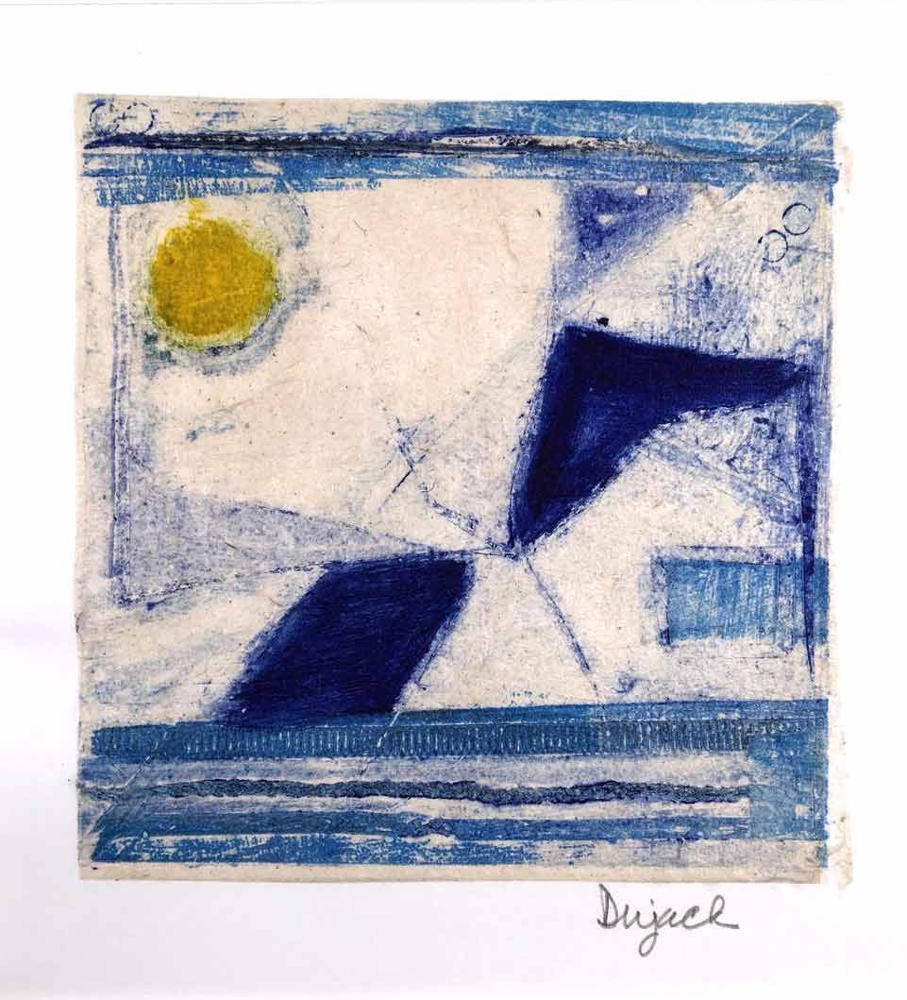

The Art Of Linda Dujack
Linda Dujack is an award winning painter and printmaker who
lives in Greenwich Village, NYC, and New Vernon, NJ. Linda has been
creating art since 1998.
Linda’s first love was printmaking and she continues to work with drypoint, monoprints, and chine collé. She is also a painter and incorporates printmaking and collage into her paintings.
Linda also creates assemblages and wood constructions. She collects wood and other found objects on her walks through New York City, New Jersey, and Cape Cod, and then saws, paints, and assembles them into interesting objects.
Linda has shared her enthusiasm for art by teaching at Our Lady of Pompeii School and The Cooke School (a school for children with special needs) in NYC. She was also a Vice President, Board Member, and curator at New Century Artists, a gallery in NYC, for 16 years. Linda’s formal art training has taken place at The Art Students League, Cooper Union, and the Printmaking Center of NJ (now Frontline Arts).
After a career in science, Linda devoted full time to art.
Her work is in corporate and private collections.
Linda’s first love was printmaking and she continues to work with drypoint, monoprints, and chine collé. She is also a painter and incorporates printmaking and collage into her paintings.
Linda also creates assemblages and wood constructions. She collects wood and other found objects on her walks through New York City, New Jersey, and Cape Cod, and then saws, paints, and assembles them into interesting objects.
Linda has shared her enthusiasm for art by teaching at Our Lady of Pompeii School and The Cooke School (a school for children with special needs) in NYC. She was also a Vice President, Board Member, and curator at New Century Artists, a gallery in NYC, for 16 years. Linda’s formal art training has taken place at The Art Students League, Cooper Union, and the Printmaking Center of NJ (now Frontline Arts).
After a career in science, Linda devoted full time to art.
Her work is in corporate and private collections.